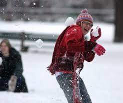

Šajā rakstā tiks apskatītas 3 izklaides Ziemas sezonā:
Viens no populārākiem izklaides veideim ir slēpošana . Tas ir labs veids, kā pavadīt laiku.
Sldošana arī palīdz uzlabot garastāvokli un fizisko gatavību.
Kam tad tas nepatīk!
Atrast ziemas izklaides vietas.
Citas saites: